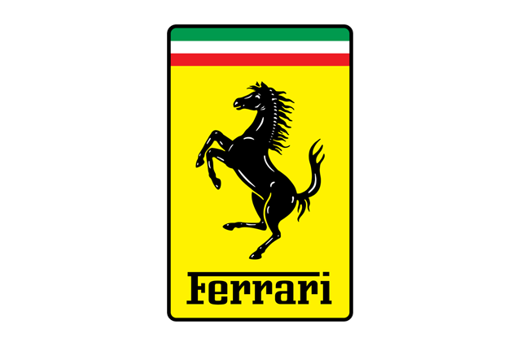

NANO GEARS

Enzo F12tdf
Price : $ 485,000

The Ferrari F12tdf (tour de France) is a track-focused version of the F12berlinetta unveiled in October 2015. The name pays homage to the Tour de France automobile race held between 1899 and 1986 and which was regularly won by the Ferrari 250 between 1956 and 1964. The F12tdf shares the same 6.3 litre V12 engine with the F12berlinetta, but with power output increased to 780 PS (574 kW; 769 hp) at 8500 rpm and 705 N·m (520 lb·ft) of torque at 6750 rpm. The F12tdf is 110 kg (243 lb) lighter than the F12, having a claimed dry weight of 1,415 kg (3,120 lb) and kerb weight of 1,520 kg (3,351 lb). Ferrari claims an acceleration time for the F12tdf of 0 to 100 km/h (62 mph) in 2.9 seconds and 0 to 200 km/h (124 mph) in 7.9 seconds. The top speed was claimed to be 'in excess of 340 km/h (211 mph)'.
Copyright (c) 2023. All rights reserved. Saroosh Shahid
Design by Saroosh Shahid
Programmed by Saroosh Shahid